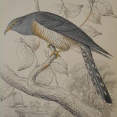
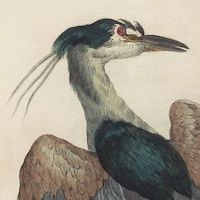
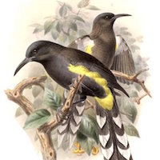
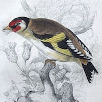
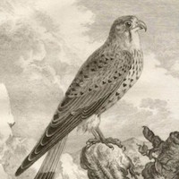

Clare has commissioned composer Kim Ashton to write a set of five miniatures for piano solo, Ornithology, each inspired by birds and the vividly evocative poetry of Gerald Manley Hopkins, Elisabeth Bletsoe and Katharina von Aachen. She is seeking sponsors for four of the movements: 'Heron', 'O‘ahu ‘ō‘ō', 'Goldfinch' and 'Kestrel or Windhover'.
For a payment of £250, a sponsor can dedicate a movement to a person of their choice and will receive two presentation copies of the score and a recording of the entire work by Clare. The work will be premiered at the Stapleford Granary (Cambs) on the 24 November 2016 and performed in full at Woodend Barn (Aberdeen) in association with the Sound Festival on the 2 March 2017. Clare will also be including movements in her recital programmes throughout spring 2017.
ORNITHOLOGY, for solo piano (2016, 20 mins)
1. Cuckoo: 'Repeat that, repeat, cuckoo, bird, and open' (G.M. Hopkins)
2. Heron: 'Pastures garlanded with wire & electricity. Barbed & tanged.' (Elisabeth Bletsoe)
3. O‘ahu ‘ō‘ō (endemic to Hawai’i, now extinct): 'You. Explosions of soft black tendrils everywhere.' (K. von Aachen)
4. Goldfinch: 'Days of brief transparency, viewed through a window of ice, lifted.' (Elisabeth Bletsoe)
5. Kestrel or Windhover: 'Brute beauty and valour and act, oh, air, pride, plume' (G.M. Hopkins)
“Five birds: two songbirds, one bird of prey, one waterbird, and one famous for its parasitic nesting behaviour. The flight and the songs of birds have always held a fascination for me, while the variety of their shapes, sizes and colours has inspired many artists and poets – and hunters – through history. The starting point for Ornithology is five poems chosen for their striking evocations of the birds they portray. Lines from the poems entitle each movement in what will be a diverse and very colourful set, ranging from the ethereal through the elegiac to the dazzlingly brilliant. Two poems by Gerard Manley Hopkins bookend the set: his short stanza on the cuckoo known as ‘Fragment 146’ provides inspiration for the atmospheric opener, while the famous Windhover makes for a tour de force finale. In between, contemporary Dorset poet Elisabeth Bletsoe’s very personal responses to the Heron and Goldfinch sandwich a lament on the passing of the O‘ahu ‘ō‘ō, a stunning Hawaian bird from a genus entirely hunted to extinction for their colourful feathers.” (Kim Ashton)
Click here for full texts of poems.
Composer – teacher – conductor – gardener – baroque oboist. Kim Ashton’s music has been heard in concerts and festivals in the USA, France, Germany, Portugal, Sweden, Denmark, Belgium, Croatia, and throughout the UK. Kim’s recent orchestral work Spindrift, written for the London Symphony Orchestra, is shortly to be released by the LSO on their own label, complementing existing recordings of his chamber pieces on the Lorelt and Nonclassical labels. Recent large-scale works have been performed by Ensemble InterContemporain, the Orchestra of the Age of Enlightenment, the Orchestra of Opera North, and Orquestra Gulbenkian, while he regularly collaborates with chamber groups and solo artists such as Lesley-Jane Rogers, Oliver Coates, Sound Intermedia, VOCAALLAB, Huw Watkins, Geoffrey Paterson, Juliet Fraser, and players from the Budapest Symphony Orchestra. His interest in opera/music theatre is reflected in a long-standing relationship with Paris-based theatre collective La Chambre Aux Echoes, while in the UK his music-theatre piece Tonseisha was performed at the 2014 Tête à Tête Opera Festival with funding from the Arts Council. During his PhD, Kim studied with Silvina Milstein and George Benjamin at King’s College London; he is now a visiting lecturer at Cambridge University, where for the last 10 years he has taught composition, history, and analysis.
Acclaimed as a pianist of “amazing power and panache” (The Telegraph), Clare Hammond is recognised for the virtuosity and authority of her performances and is developing a “reputation for brilliantly imaginative concert programmes” (BBC Music Magazine, ‘Rising Star’). In 2015 the Guardian described her as a “dazzling athlete” following her performance at the Barbican Hall, she gave five broadcasts for BBC Radio 3, and recorded discs for Sony, BIS Records and Signum. Highlights in 2016 include her Royal Festival Hall debut with the Philharmonia, and a concerto tour of Poland, to include a newly discovered work by Josef Myslivecek, a mentor of Mozart. In May, Hammond released her third disc for BIS Records, Horae (pro clara), with solo piano music by Ken Hesketh, and returns to the Cheltenham and Presteigne Festivals later in the summer. Her previous disc release, ‘Etude’ received unanimous critical praise for its “unfaltering bravura and conviction” (Gramophone) while the BBC Music Magazine stated that “this array of wizardry is not for the faint hearted”.
|  |  |  |  |  | |
▸ Kim Ashton |
▸ 1. Cuckoo |
▸ 2. Heron |
▸ 3. O'ahu 'ō 'ō |
▸ 4. Goldfinch |
▸ 5. Kestrel |
'Cuckoo' from Ornithology, performed by Clare Hammond
Excerpt from Dots, performed by Consortium 5
Excerpt from Spindrift, performed by the London Symphony Orchestra